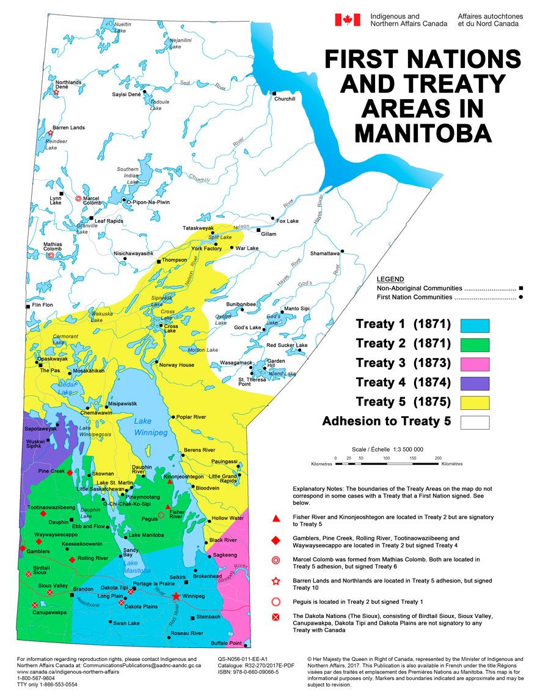

Where the Treaty Was Negotiated
Treaty 1 was negotiated and signed at Lower Fort Garry Winnipeg Manitoba.
Map of the Treaty Area

Map of Treaty One
The Treaty One First Nations are the seven nations that signed Treaty No. 1 on August 3, 1871.
This treaty was made between the Anishinaabe and Muskegon Cree peoples and the Crown.
These nations have a shared history and work together to protect their Treaty rights and
traditional lands. They aim to achieve their political, economic, and cultural goals together
as part of the Treaty One Nation
Communities Involved
The Treaty One First Nations include:
- Brokenhead Ojibway Nation
- Long Plain First Nation
- Peguis First Nation
- Roseau River Anishinabe First Nation
- Sagkeeng First Nation
- Sandy Bay Ojibway First Nation
- Swan Lake First Nation
These communities are mostly from the Anishinaabe and Swampy Cree nations.

Historic Terms of the Treaty
The terms are:
- Each group to receive a reserve sufficient for 160 acres for each family of five.
- One-time gratuity of $3 and a yearly payment of $15 per family of five.
- Establishment of schools on each reserve.
- Prohibition of liquor on reserves or sale of liquor on reserves.
- An accurate census of Indigenous peoples conducted by the Commissioner.
What Makes This Treaty Different
What makes this treaty different is that it focused on the land for settlement and farming aid but did not give as much information compared
to later treaties. Unfulfilled promises causing disputes, unlike later agreements
like Treaty 6, which included more provisions such as health care.
Implementation Today
Today, the Treaty is being implemented through various initiatives:
- Urban reserves, like Kapyong Urban Reserve.
- Economic developments like Long Plain First Nations Gas Station and other ventures in the Treaty communities.